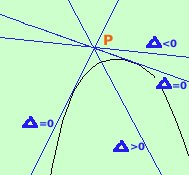

|
Quando farai analisi matematica vedrai un metodo diverso molto piu' semplice, ma, per ora, devi applicare il metodo del determinante  Presa una parabola ed un punto esterno alla parabola stessa considereremo il fascio di rette nel punto e fra queste rette sceglieremo quelle che hanno due punti coincidenti comuni con la parabola, cioe' quelle che messe a sistema con la parabola ci forniscono due soluzioni coincidenti, ossia il delta del sistema fra fascio di rette e parabola deve essere uguale a zero Dai anche un'occhiata a questo link se il delta e' minore di zero la retta e' esterna rispetto alla parabola e le due soluzioni del sistema sono complesse e coniugate se il delta e' maggiore di zero la retta taglia la parabola in due punti e le due soluzioni del sistema sono reali e distinte se il delta e' uguale a zero la retta e' tangente alla parabola e le due soluzioni del sistema sono reali coincidenti Esercizio 1 Data la parabola y= x2 - 6x + 5 trovare le equazioni delle tangenti condotte alla parabola dal punto A(2,4) Soluzione Esercizio 2 Data la parabola y= -x2 - 6x trovare le equazioni delle tangenti condotte alla parabola dal punto A(4,0) e determinarne i punti di tangenza Soluzione Esercizio 3 Data la parabola y= x2 + 1 trovare le equazioni delle tangenti condotte alla parabola dall'origine O(0,0) e, indicati con A e B i punti in cui tali tangenti toccano la parabola, trovare l'area del triangolo OAB Soluzione |